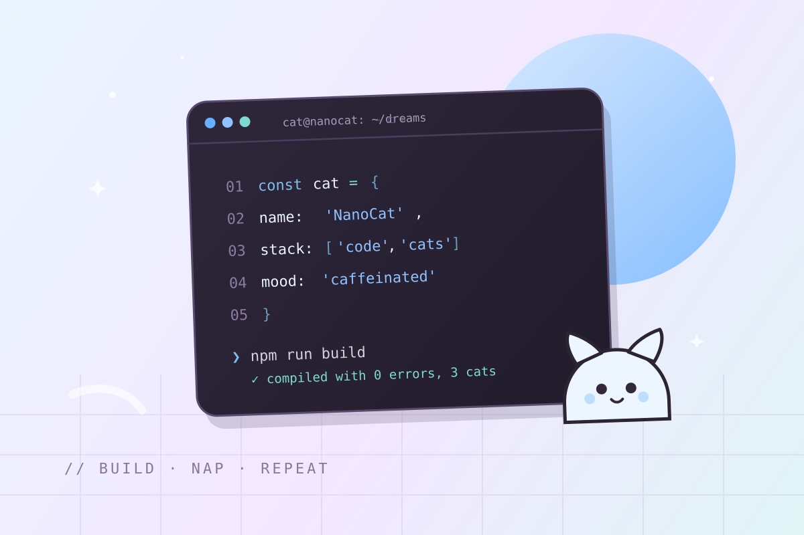
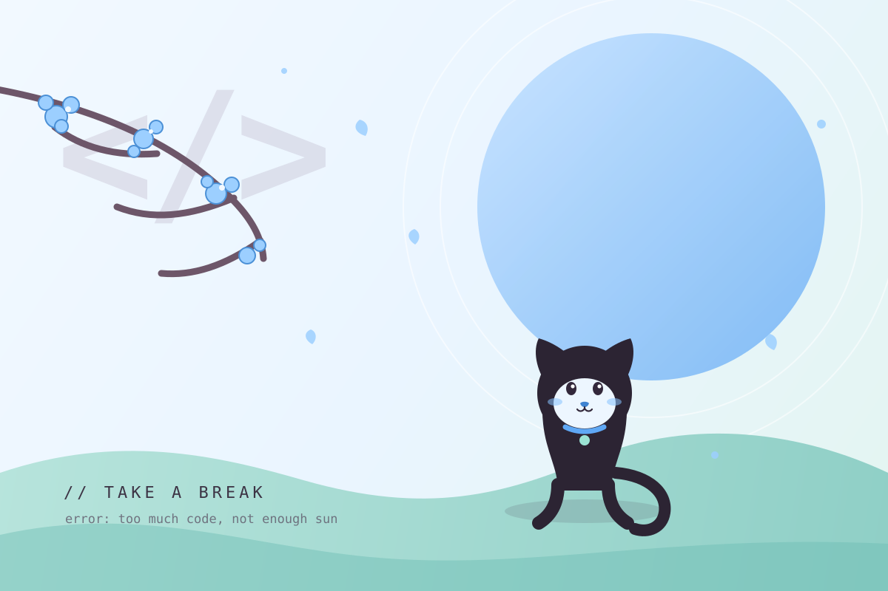
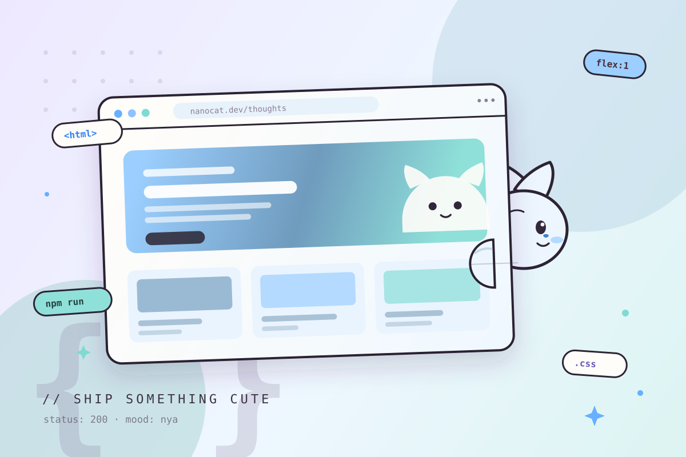

↗从零开始写一个操作系统（七）桌面：窗口服务是个普通进程
把上一章留下的窗口系统补齐：输入、焦点、事件循环，以及一个能拖动的最小桌面。
// LATEST NOTES
共 20 篇

↗把上一章留下的窗口系统补齐：输入、焦点、事件循环，以及一个能拖动的最小桌面。

↗一套不折腾但足够顺手的环境，包括让终端看起来更像家的插件与小习惯。

↗没有歌词的电子乐、老动画 OST，还有窗外偶尔经过的雨声。
从留白、栅格到一点点不对称，记录一次以「舒服」为目标的首页重构。
不用 SVG，不用图片，只用几个 div、border-radius 和 keyframes。
一张够大的桌子、一盏暖光灯、两块屏幕，以及一套不再折腾的软件组合。